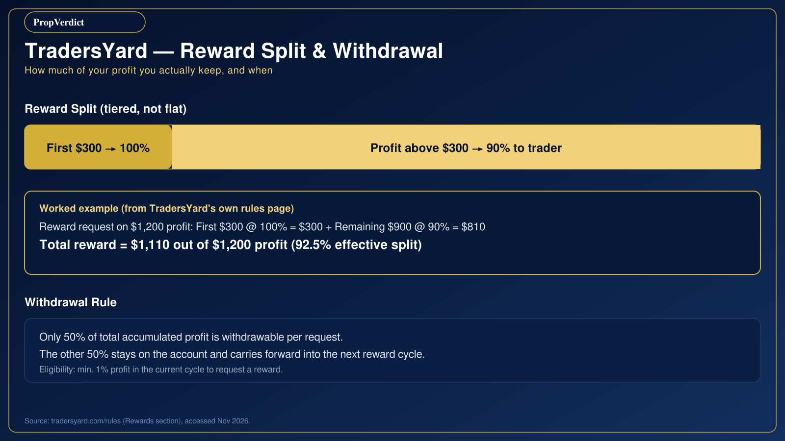

TradersYard Review: Toàn bộ thông tin phí, điều kiện & chia lợi nhuận (2026)
Cập nhật: 18/11/2026 · Nguồn số liệu: tradersyard.com
TradersYard là sàn quỹ (prop trading firm) cung cấp 4 gói vốn thử thách $25K, $50K, $100K và $150K, với mức phí tham gia dao động $49–$339 tùy gói. Bài viết này tổng hợp đầy đủ điều kiện challenge, phí, chính sách rút tiền và chia lợi nhuận dựa trên thông tin công khai trên website chính thức của TradersYard.
Điều kiện Challenge
| Tiêu chí | Giá trị |
|---|---|
| Gói vốn | $25K / $50K / $100K / $150K |
| Giá tham gia | $49 – $339 |
| Profit Target | 5% |
| Drawdown tối đa (End of Day) | 3% |

Chính sách chia lợi nhuận & rút tiền
TradersYard áp dụng cơ chế chia lợi nhuận theo bậc (tiered split):
- 100% lợi nhuận cho $300 đầu tiên rút được
- 90% lợi nhuận cho phần vượt $300
Trader được rút 50% lợi nhuận mỗi kỳ thanh toán. Giới hạn thưởng (reward cap) theo gói dao động từ $930–$1,000 (gói nhỏ) đến $3,180–$3,500 (gói lớn nhất), với mức thưởng trung bình thực tế ghi nhận khoảng $748–$2,618 tùy gói.

Số liệu thực tế từ TradersYard
- Hơn $410,000 tiền thưởng đã được chi trả cho trader
- Thời gian xử lý rút tiền trung bình: 8 giờ
- Tổng khối lượng giao dịch: $76 triệu
- Hơn 25,000 trader đã tham gia

PropVerdict nhận định
TradersYard phù hợp với trader muốn mức phí tham gia thấp (từ $49) và tốc độ xử lý rút tiền nhanh (trung bình 8 giờ). Mức chia lợi nhuận 90% ở phần vượt $300 và chính sách rút 50%/kỳ là điểm cộng so với một số sàn quỹ khác có vòng khóa rút tiền dài hơn. Trader nên tự kiểm tra lại các điều khoản mới nhất trên website chính thức trước khi đăng ký, vì chính sách prop firm có thể thay đổi theo thời gian.